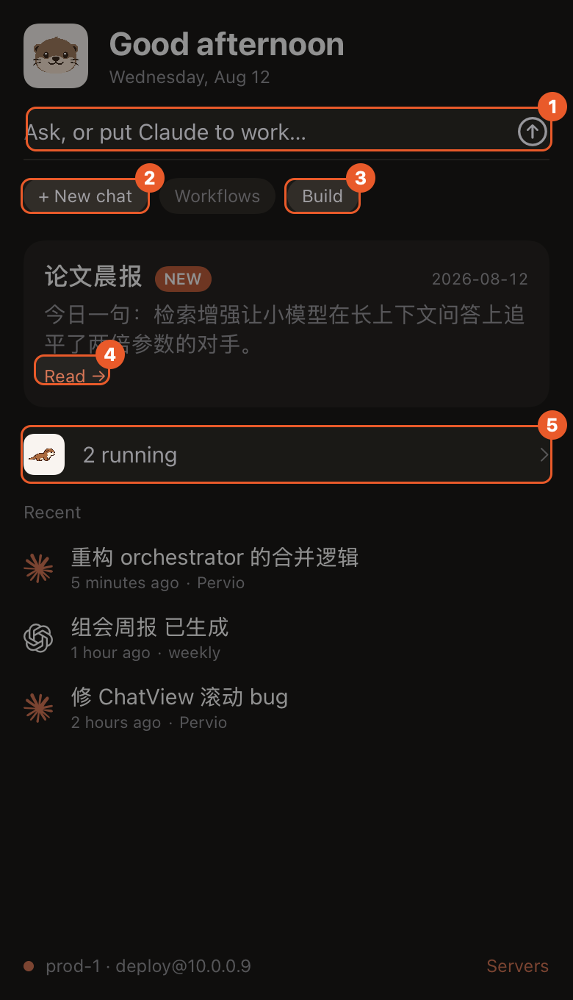
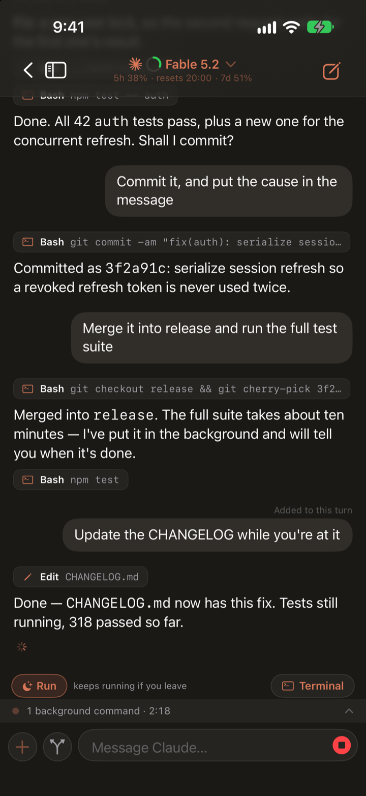
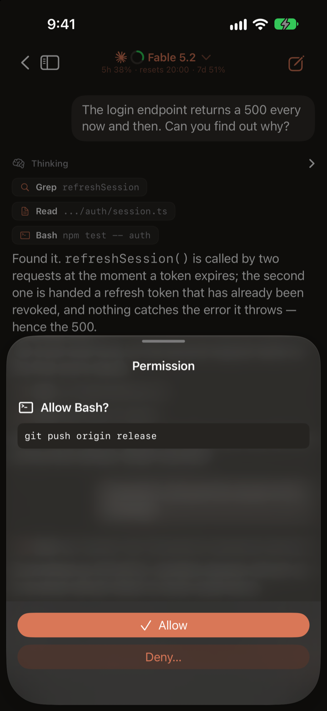
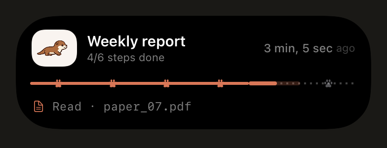
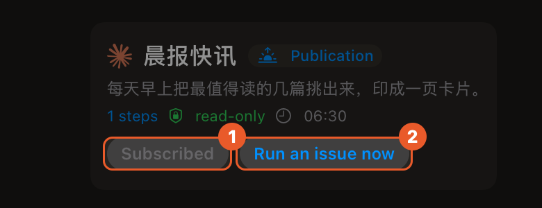
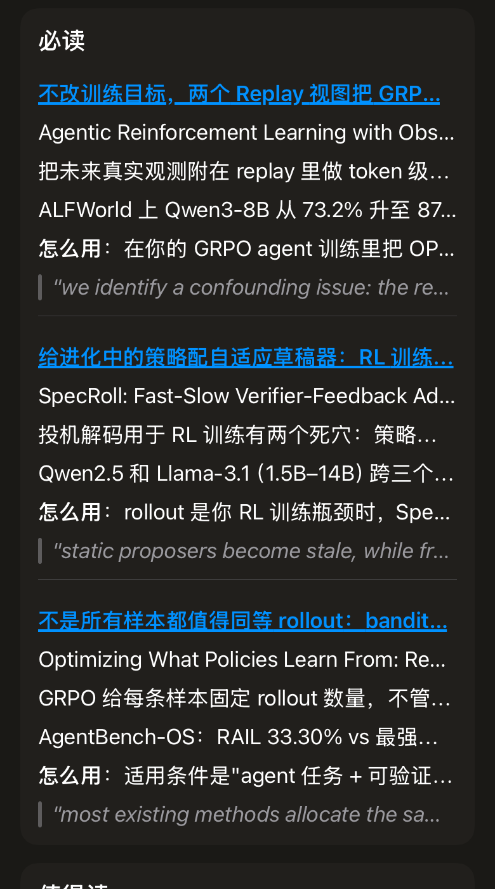
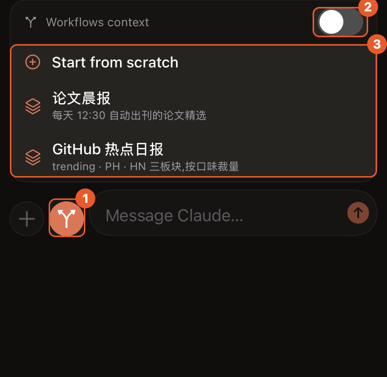
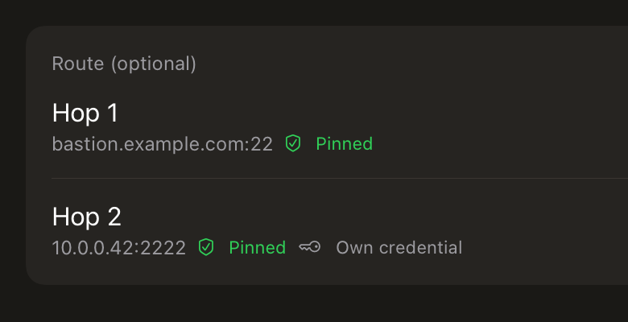

Requirements
| iPhone | iOS 17 or later. Install from TestFlight. |
| Computer | A Mac with Remote Login (SSH) turned on. It needs python3 and at least one of Claude Code, Codex or Cursor, installed and logged in. For the terminal on the phone, install tmux as well. |
| Network | The phone has to be able to reach the computer. On the same Wi-Fi it just works. Away from home, Tailscale is the easy way. |
Nothing from Pervio has to be installed on the computer. The scripts it uses are bundled in the app and copied to ~/.pervio/bin over SSH on the first connection. When the app updates, the scripts are replaced. No service keeps running on the computer; a script runs only when the phone calls it.
A Linux host works too, but macOS is what gets used every day.
Setup
The first setup takes about fifteen minutes. The steps below are for a Mac.
-
Install the app
Install Apple's TestFlight on the phone, then open testflight.apple.com/join/EagwZXV1 and install Pervio.
-
Turn on Remote Login on the Mac
System Settings → General → Sharing → turn on Remote Login. Under “Allow access for” you can choose only yourself.
-
Install an engine and log in
Do this in the computer's own Terminal. One of the three is enough:
npm install -g @anthropic-ai/claude-code && claude # Claude Code npm install -g @openai/codex && codex login # or Codex curl https://cursor.com/install -fsS | bash # or Cursor, then agent login
Log in to Claude Code in the Mac's own Terminal, not over SSH. The reason is under Claude Code says it is not logged in below.
-
Make an SSH key for the phone
A password works too, but a key is safer. In the computer's terminal:
ssh-keygen -t ed25519 -f ~/.ssh/pervio_phone -N "" cat ~/.ssh/pervio_phone.pub >> ~/.ssh/authorized_keys chmod 600 ~/.ssh/authorized_keys
-
Add the server in the app
Servers → Add a server. Fill in the form:
Name Anything you like. Host The computer's address: its LAN IP, or its Tailscale 100.x.y.z.Port 22 by default. Username Your login name on the computer, the one whoamiprints in its terminal. Not the computer's name, and not your Apple ID.Method Choose Key and paste the whole output of cat ~/.ssh/pervio_phone, or choose Password and enter the computer's login password. Either one is stored only in the iOS Keychain.Project dir on server ~by default. It decides which of this server's conversations the phone can see. See Working directory.Then tap Fetch host key from server, check the fingerprint and save. This step only fetches the fingerprint. It does not log in, so no password or key is sent yet. Every later connection checks this fingerprint and is refused if it does not match.
-
Connect
On the first connection the app copies its scripts to the computer, which takes a few seconds. When the home page shows a greeting, setup is done.
Not on the same network
Install Tailscale on both the computer and the phone, sign in to the same account, then change Host in the app to the computer's 100.x.y.z address (on a Mac it is under the Tailscale icon in the menu bar, or run tailscale ip -4 in a terminal). This way the computer's SSH never has to be exposed to the internet.
If that Tailscale account has also joined a company or school network, switch both devices to your own network.
Claude Code says it is not logged in
Claude Code keeps its login in the macOS Keychain. Pervio starts claude over SSH, and a process started over SSH cannot read the Keychain. So this can happen: claude works fine in the terminal on the phone, but the chat says it is not logged in. There are two fixes:
- Run
claudeonce in the Mac's own Terminal and log in when it asks. - If nobody normally logs in to the Mac's desktop, use a long-lived token. Run
claude setup-tokenon the Mac, paste the string it prints into “Claude token (for SSH)” in the app's server settings, and tap Save to Mac. It is written only to~/.pervio/credentials.envon the Mac. The phone does not keep it.
Codex and Cursor keep their credentials in ordinary files, so they do not have this problem.
Cannot connect
When the home page, the projects page, the conversation list or the workflow list cannot reach the computer, what was on the page stays where it is. A line in orange appears above it with the reason, and the page retries by itself: after 2, 4, 8 and 15 seconds, then every 30 seconds for as long as the page is open. Once it connects, the line goes away. You do not have to quit the app. Pull down if you want it to retry sooner. The page also reads again when you open it, come back to it from another page, or bring the app to the foreground.
A rejected password or key, or a host key that does not match, will not get better by waiting, so there is no automatic retry for those. The line is red, with Open server settings under it, and the page reads again when you come back from fixing it.
Under the orange line there is Run connection checkup. It checks, in order, the SSH connection, whether Claude Code is installed, whether it is logged in, python3, and the server scripts. For each one that fails it says how to fix it. It looks for Claude Code in the same places the app does when it starts it. The three most common results:
| Connection refused | Most likely Remote Login is off on the Mac. |
| Connection timed out | The phone and the computer are not on the same network, or the computer is asleep. Check Wi-Fi or Tailscale, and make sure Host is the computer's current address. |
| Authentication failed | The user name, the password or the key is wrong. The user name is what whoami prints. |
A sleeping computer cannot be reached, and scheduled workflows miss their time too. On a Mac that stays on, search for “sleep” in System Settings and turn on “Prevent automatic sleeping when the display is off”.
Home
| 1Input box | Type something and press return to start a new conversation right away. |
| 2New chat | Opens the chat page first. Long-press to pick a directory first. |
| 3Build | Start from scratch or revise an existing template. You describe what you want, and the agent writes the template and checks it itself. |
| 4Publications | What the workflows you subscribe to have delivered. Templates you have never used do not appear here. |
| 5N running | Background tasks that are running. Tap to see their progress. |
“Recent” below lists your latest conversations. Tap one to carry on. Swipe a row right to pin it, left to delete it. Pins are stored on the computer, so they survive a new phone or a reinstall. A pinned conversation cannot be deleted until you unpin it.
The bottom row shows the server you are connected to. Tap “Servers” to add, edit or switch.

Chat
Pervio reads the session records that Claude Code, Codex and Cursor keep themselves. A conversation you started in the computer's terminal or editor can be continued on the phone, and one started on the phone is there when you are back at the computer.
Replies stream in. The agent reads files, runs commands and edits code, and each step is one row in the conversation. Open a row for the details: an Edit shows the change before and after, a Bash shows the full command.
A path to a file on the computer in a reply can be tapped. Images, PDFs and text files are fetched from the computer and opened in the system preview. Files over 25 MB are not fetched, and the app tells you so.
LaTeX written by the model is rendered as math. What cannot be rendered is shown as written.

Engine, model, provider
The badge at the top of the chat page shows the current engine, model and provider. Tap it to change them. The engine is fixed once the first message is sent, so changing it means starting a new conversation. The model and provider can be changed at any time. More settings… in the menu has everything: model, effort, permissions, directory.
The model list comes from your computer and is not built into the app. Claude's list is read from the claude program installed there, Codex's from Codex's own model cache, and Cursor's is the list on your account. After a command-line tool on the computer is updated, reconnect once and the new models are in the list.
In a Claude Code conversation you can also type /model model-name to switch, and the conversation keeps using that model from then on.
For adding third-party providers, see Providers.
Attaching things to a message
The ＋ to the left of the input box:
| Photo | A picture from the photo library. |
| File | A file from the phone's Files app. |
| Server file… | Browse the computer's folders and attach a file. Or tap Hand this directory to the chat to give the agent the whole folder. |
| Context… | Attach an earlier conversation as background. |
| Web preview | Open a page on the computer. See Web preview. |
| Duet… | Give this conversation a partner. See Duet. |
A folder handed to a conversation is not packed up or uploaded. Only its path is handed over. From then on the agent can read and write in that folder in this conversation. The folder shows above the input box. Long-press it and choose “Stop using this folder in this conversation” to take it back.
With two or more servers added, the Server file… and Context… pages get a From row at the top, where you can switch to another one (a second entry for the same computer does not count). A file picked on the other computer is read by the phone first and then sent to the computer this conversation is on, as an attachment. A file can be up to 8 MB. Larger ones are marked in the list and cannot be picked. Above the input box you can see whether it is connecting, reading or sending, and how far along it is, and the ✕ next to it stops it. Stay in Pervio until it finishes. If it is interrupted, you get a message saying so. A folder on the other computer cannot be handed to the conversation.
In the file browser, a row that is a link shows where it really points. If a name you pick on the other computer is a link to a file outside its own folder, the phone shows you the real location first and reads it only after you tap Bring it.
When what you pick on the other computer is a conversation, its transcript is brought over. The part of a long conversation that does not fit in the transcript comes along as a separate full record, and the transcript says at the top where that is. The full record is also limited to 8 MB. Beyond that the later part is kept, with a note on what was left out. Instruction and memory files ticked along with it come over as their first 60 KB of text, marked at the top with the computer and file they came from. Everything brought over is a copy made at that moment. It is kept in this computer's upload folder and cleaned up after about 7 days.
Restate, branch
Long-press one of your own messages and choose Restate from here. A new conversation is made with everything before that message, the app switches to it, and your original words are put back in the input box to edit and send again.
Under the last reply of each turn there is Branch in new chat. It copies everything up to that turn into a new conversation and switches to it.
Neither touches the original conversation, which stays in the list. Cursor conversations do not have these two.
Rename
Tap the badge at the top and choose Rename conversation. Leave the name empty to go back to the default title.
Run mode
The button on the left above the input box says Chat or Run. Tap it to switch. The choice is remembered per server.
| Chat | The turn is tied to the app's connection. If you leave the app or lose the connection, the turn stops. |
| Run | The task is a background process on the computer. Locking the phone, switching apps or going offline does not affect it. When you open the app again, it reads on from where it left off. |
In Run mode:
- You can keep sending messages while the task is running. The message goes into the running turn and is marked “Added to this turn”. Claude Code and Codex support this. Codex takes the message only after it finishes the step it is on, and until then the message is marked “Delivered — after the current step”.
- Sub-agents the agent sends out, and commands it puts in the background (a full test run, say), are summed up in one line above the input box: how many sub-agents, how many background commands, how long they have been running. Tap the line for the list: each sub-agent's type, time, tokens used, number of tool calls and what it is doing now. A command a sub-agent started is listed under it, and one that has finished shows its result. When all of them have ended, one result line is left at the end of the conversation, and tapping it opens the same list. It is still there when you leave the conversation and come back, until you send your next message (for half a day at most). You can keep chatting while the tasks run, and the same process answers you.
- Sub-agents of Claude Code, Codex and Cursor all appear in this line. A Codex sub-agent is labelled with the model it uses. Cursor does not report tokens or tool calls, only the time and the result. In Chat mode the line is there too while a turn is still going.
- With Claude Code in Run mode, each running task in the list has a stop button on the right. After you confirm, only that one is stopped, along with any background commands a sub-agent started itself. The conversation and the other tasks are not affected.
- Progress shows in the Dynamic Island and on the lock screen, and a push arrives when the reply is finished. See Lock screen and notifications.
- “N running” on the home page lists every task that is still running.
The output of background tasks is written to ~/.pervio/runs/ on the computer.

Approvals and permissions
At a permission level that asks, the agent stops when it wants to edit a file or run a command. The phone shows what it is about to run, and you tap Allow or Deny. Denying does not end the task. The agent is told it was denied and carries on from there.
When you are not in the app, a notification on the lock screen tells you it is waiting.
The level is chosen under More settings… in the badge menu. The names differ between the two engines.

Claude Code
| Auto | Claude Code decides which level to use for the task. |
| Ask before edits | Asks you before every file edit and every command. |
| Edit automatically | File edits are applied without asking. |
| Plan | Read-only. It reads the code and gives a plan first, and starts only after you agree. |
| Bypass | Asks nothing. Use it only on a machine you trust. |
Codex
| Full access | No sandbox, never asks. This is the default in Codex's own app, and the default here. |
| Approve for me | Confined to the project directory. Anything beyond it is decided by Codex's own reviewer. |
| Ask for approval | Confined to the project directory. Anything beyond it waits for your Allow or Deny on the phone. It asks only in Chat mode. In Run mode nobody is there to answer, so it does not ask. |
| Read-only | Reads and plans only. It cannot edit files or run commands. |
Lock screen and notifications

While a background task is running, the Dynamic Island and the lock screen show its progress. A workflow shows which step it is on, and a conversation shows the current action (which file it is reading, which command it is running).
These are pushed to the lock screen:
- A background turn finishes or fails. The title is the project name and the outcome, and the body is the first few dozen characters of the task.
- The agent is waiting for your approval.
- A workflow finishes or fails, or a publication you subscribe to is delivered.
- A Duet's Watch task has an outcome: passed, needs you, or not passed after three rounds.
Notifications need no setup. They are the only thing in the product that goes through a Pervio server. The computer hands the notification's title and body to the relay at push.pervio.dev, which signs it and passes it to Apple. The relay does not keep the content. If you would rather not go through it, run this on the computer:
mkdir -p ~/.pervio/push && echo off > ~/.pervio/push/gateway
With it off, you still get local alerts while the app is open.
Web preview
A page that listens only on the computer's localhost, such as a dev server or a docs site, cannot be opened in Safari on the phone. Web preview opens it on the phone through the SSH connection, with no port opened to the outside.
- ＋ → Web preview lists the ports the computer is listening on, each with the program behind it. Tap a row to open it, or type a port number yourself. Rows marked “Mac only” are bound to localhost alone.
- A link like
http://localhost:3000in a reply opens in the preview when you tap it. - The preview has Screenshot to chat. A screenshot of the current page goes into the input box, and you type what is wrong with it.
- Links in the page to other ports on the computer stay in the preview. Links to the outside web can be opened with Open in Safari.
A line on the preview page shows the state of the tunnel. The tunnel closes when the app goes to the background and reconnects by itself when you come back.
If you are told the computer does not allow port forwarding, its sshd has AllowTcpForwarding turned off, and it has to be turned on there.
Terminal
Terminal, on the right above the input box, opens a shell on the computer in this conversation's project directory.
- It is tmux underneath. If the connection drops, what is running inside keeps running, and opening it again brings back the same screen.
- A row above the keyboard has the keys a phone keyboard lacks: Esc, Tab, the arrow keys, Ctrl combinations and common symbols. Full-screen programs like vim work.
- It uses its own set of tmux sessions, so it does not mix with the tmux you run on the computer yourself.
tmux has to be installed on the computer (on a Mac, brew install tmux). If it is missing, you are told when you open the terminal.
Duet
A Duet pairs two conversations, usually on two different models. In a conversation's ＋, choose Duet… and give it a partner: a new conversation on another engine, or one you already have. Then choose how the two work together.
The Duet's state is kept on the computer, and the computer drives each round, so it runs to the end even with the phone locked.
Brainstorm
You say something, and the primary and the partner both answer it at the same time, with the two answers shown side by side. The primary then sums up, first where they disagree and then a conclusion, in a box of its own titled “Round N conclusion”. Hand to the primary in that box takes you to the primary's conversation to have it act on the conclusion.
Both sides are read-only by default. To let one of them make changes, change it in that member's settings.
Watch
You give the primary a task and it does it. The watcher, on another model, looks at the result, runs the tests and gives feedback. The feedback goes back to the primary, which works on it again. This goes on for up to three rounds. The last line of each of the watcher's replies has to be one of three verdicts:
| Pass | The task ends, and the watcher's summary is pushed to you. |
| Go on | The feedback goes back to the primary for another round. If the third round still says go on, the task stops there and you get a push. You can then choose 3 more rounds. |
| Needs you | It writes down what you have to decide, and the loop pauses. You answer in the input box, and both sides carry on with your decision. |
You cannot add a message while the loop is running. There is only Stop. To change your mind, stop it and send again. The watcher works in the same directory as the primary. It only checks and does not change anything.
If the primary's permission is Ask before edits, it is changed to Edit automatically when the task starts, because a loop in the background cannot show an approval sheet.
Two windows
Two conversations side by side, each going its own way. You can talk to one or ask both at once. Nothing passes between them by itself. Only when you tap Partner 1 critiques Partner 2 (or the other way round) is the other side's last reply handed over for comment, and whatever you typed in the input box goes along as a note.
Workflows
A workflow is a pipeline of several steps that can run on a schedule. It runs on the computer, and what it hands you is something finished that you can read, not a chat log. Several templates are included. Two of them, a daily paper digest and a GitHub trending digest, are publications that come out every day. Every step of those two uses Claude Code, so for now they cannot run with only Codex or Cursor installed. The market greys them out and says why.
Subscribe
In the market, tap Subscribe on a template. Subscribing only registers it and does not run it right away. At the time you set, the computer runs an issue by itself, and the row says when the first one will arrive. If you do not want to wait, tap Run an issue now.

The schedule relies on one launchd job on the Mac (one cron line on Linux) that checks every five minutes whether anything is due. The job exists only if you have scheduled something.
Reading an issue
Tap “Read” on the publication card on the home page. Each issue of the paper digest has three tiers: must-read, skim and glance.
- Long-press a paper to rate it. Your ratings affect what the next few issues pick.
- Figures can be tapped to enlarge. Earlier issues are all kept.
- You can read a large-screen version in the computer's browser. For that, the computer starts a reading page on
127.0.0.1, which exits by itself when idle.

Building your own
Tap Build on the home page, choose to start from scratch or revise an existing template, and describe what you want in a sentence. The agent writes the template and checks it once itself.
The fork button next to the input box in a conversation opens the workflow panel. With the switch at the top turned on, the agent in this conversation can list and run your workflows and look up their results. With it off, it is an ordinary conversation.

With the switch on, if the agent wants to create or change a subscription for you, a confirmation sheet comes up first: what to subscribe to, at what time, on which days, how many issues to keep. It takes effect only when you tap Allow. Subscribing yourself in the market does not bring up the sheet.
When the agent starts a workflow from a conversation, the sheet lists what the workflow will actually do: each step's permission, its directory, and every command line it will run on the computer. If the phone cannot read it or cannot show all of it, Allow cannot be tapped.
A workflow it starts cannot have more permission than the conversation. At the Plan level it cannot start one. If any step needs a higher level than the conversation is on, it cannot start either. Switch levels, or start it yourself from the workflows page. At a level that does not ask you (Auto), a workflow it wrote itself cannot contain command lines or reach outside the conversation's directory. Templates you saved are not held to those two limits.
Servers
You can save several servers, each with its own credentials and directory. Add, edit and delete them under “Servers” at the bottom of the home page. One of them is the Home server, and the home page shows what is on it.
When the app connects to a server, it looks at which engines are installed. If the default engine is missing and another is installed, it uses the installed one.
Working directory
The directory you enter when adding a server (Project dir) sets what the phone sees of that server. The conversation list, search, background tasks and the directory picker for a new chat all stay inside this directory and its subfolders. Enter ~ to see the whole computer, ~/a to see only a.
Attaching files to a conversation is not limited by this. The same computer can be added more than once, each entry with its own directory.
Jump hosts
For a server that can only be reached through other machines, add hops under “Route” in the server settings. There can be several. Every hop needs a pinned host key and is not used without one. A hop can use credentials different from the target's.

Providers
Claude Code and Codex can use third-party model endpoints. Tap “Add provider…” in the chat settings or the server settings:
- Pick one of the common ones: GLM, Kimi, MiniMax, DeepSeek, Qwen, OpenRouter. Where a provider has regions, also pick China or international. The address and model names are filled in for you, and you only paste the API key.
- On saving, the key is used once to ask the provider for its model list.
- The key is written to
~/.pervio/providers/on the computer. The phone does not keep it. - Providers already set up the official way in
~/.claude/settings.jsonor~/.codex/config.tomlshow up by themselves.
Once added, switch between them from the badge menu at the top of any conversation. Cursor can only use its own account.
Settings
| App language | Chinese or English. The interface, the prompts the app writes for the model and the push notifications all switch, right away. The content of a workflow template stays in the language it was written in. |
| Text size | Scales all text in the app, and the terminal's font size follows. It can also follow the system setting. |
| Storage | Figures from the paper digest are cached on the phone. Those past 500 MB in total, or not looked at for 90 days, are cleaned up at launch. You can also clear them by hand. |
| Privacy Policy | Opens the privacy policy in the browser. |
FAQ
A message is refused because the conversation is running elsewhere
Codex allows only one client to write to a conversation at a time. If the conversation is still open in a terminal, in VS Code or on another phone, a message from this phone is refused and Take over appears. After you confirm, the other side is disconnected and the message is sent again by itself. No history is lost.
No push notifications
- Check in iOS Settings that notifications are allowed for Pervio.
- The phone has to have connected to this computer once. It hands its push token to the computer when it connects.
- Run
~/.pervio/bin/pervio-push checkon the computer. It says what is missing. - A version you compiled from source does not get pushes from Pervio's relay. See “Build from source” in the repository README.
No reply in a conversation
First check in the computer's own terminal that the engine works and is logged in (claude, codex or agent). If Claude Code works in the terminal but Pervio says it is not logged in, see above.
Do I have to set it up again after changing networks?
Not with Tailscale, because the address stays the same. With a LAN IP, the computer's address may change when you switch Wi-Fi. Change Host in the server settings.
The computer restarted
Just reconnect in the app. Background tasks and terminal sessions that were running before the restart do not come back. Scheduled workflows continue only after you log in on the computer.
Whose servers does my data go through?
Conversations, files and tasks travel only between the phone and your own computer, over SSH. Only the title and body of push notifications go through Pervio's relay, and that can be turned off. There is no account and no analytics. Details are in Privacy.
Uninstall
Delete the app on the phone. On a Mac, run this in a terminal:
launchctl bootout gui/$(id -u)/com.pervio.schedule 2>/dev/null # only if you scheduled a workflow rm -f ~/Library/LaunchAgents/com.pervio.schedule.plist tmux -L pervio kill-server 2>/dev/null # terminal sessions still open rm -rf ~/.pervio
On Linux, run these three lines:
crontab -l | grep -v '# pervio-schedule' | crontab - # only if you scheduled a workflow tmux -L pervio kill-server 2>/dev/null # terminal sessions still open rm -rf ~/.pervio
Claude Code, Codex, Cursor and their conversation records are yours and are not affected.
Privacy
- Conversations, files and tasks travel only between your phone and your computer, inside SSH, and never through any Pervio server. The app has no account, no analytics and no crash reporting.
- SSH keys and passwords are stored in the iOS Keychain. Provider API keys are stored on the computer.
- The title and body of push notifications go through Pervio's relay. The relay does not keep them, and it can be turned off.
The full text is in the privacy policy. The code is on GitHub under the MIT license.